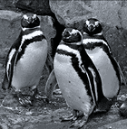
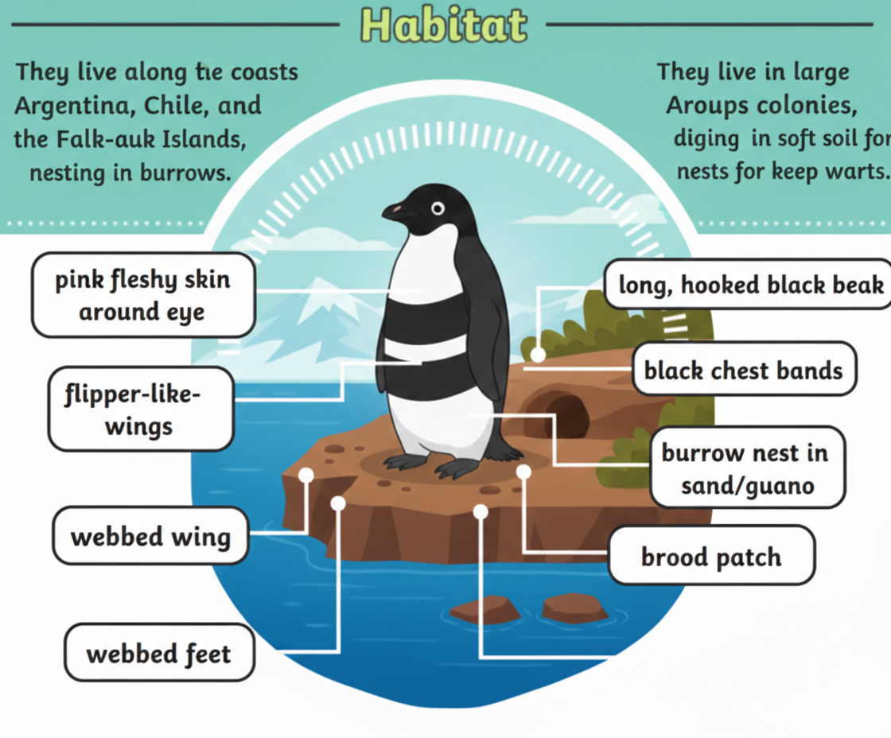
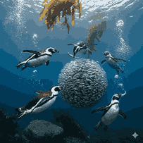

The Coastal Penguins of South America

Magellanic penguins are medium-sized penguins named after the explorer Ferdinand Magellan. They are known for the two black bands across their white chest.

Magellanic penguins live along the coasts of Argentina, Chile, and the Falkland Islands. They nest in burrows, bushes, or caves to protect their eggs from predators.

Their diet mainly consists of fish, squid, and crustaceans. They are strong swimmers and can travel long distances in search of food.